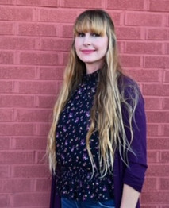

"Life as it should be"! This is my favorite Club Med Motto to live by.
After 15 plus years of 'sales' experience. Moving to different houses, cities and states, every one to two years to support my ex husbands military career, has been a life of choas and financial struggle. I'm writing to share the things that have led me to happiness and future success. I am on a career path that is clearly the most exciting journey to come for myself and my two precious children. My gratitude to Bekah Mercer and all the amazing women that are a part of Palomar, for giving me the confidence and courage to step out of my comfort zone and reach for the stars.
SHIFT+CTRL Code School is a career opportunity, a blessing, to enrich and fullfill our lives. It is enabling us the ability to give our familie's the means to "live life as it should be", instead of "living life as it is". It is a opportunity I did not know existed, for women like myself.
We have been submerged into coding where we look forward to coming to class everyday. We embrace our new safe place. It is a positive learning enviroment where we are surounded by positive reinforcment. It is aparent the job will provide more than being able to put food on the table. It provides food for the soul. I look forward to each day knowing the positive reinforcment and energy is behind the classroom door.
Being thrown into a new world, surrounded by amazing classmates and teachers has given me the ability to look forward to my future in the Dev community. These amazing intellectual's are giving their time and knowledge to help the 12 of us women gain the knowledge to work in the Dev world. We have the basic knowledge of HTML, JS, CSS, languages in our 7 weeks of school. What these amazing men and women have been building in the Dev community and given without expecting anything in return has been an eye opening experince. The Dev community is blessed with outstandung humans that have giant hearts! They have welcomed us with open arms. They truly want us all to succeed. It is the opposite of any other career path that I have experienced. They value building community and giving. I look forward to this code way of life.
A little about me: When I finshed my two years of prerequisite classes at the University Of Central Oklahoma College. I traveled to France for the summer, where I lived with a family in a small village two hours outside of Paris. Jean Piere picked me up from Charles-de-Gauelle Aeroport and whisk me down the Autobahn. While he was driving 120 mph he told me how he had flown on the Air Force One and all his life accomplishments. He strongly advised me to get into the technology business. I learned so much during my 3 months stay. It inspired me to get a job in the travel industry when I came back to The United States.
I saught out employment with a french owned company by the name of Club Med. It was the first all inclusive vacation company in the world. I decided to call and ask how I could apply for a job. The receptionist Diane said, there are two ways to work for Club Med. Come in to our office in Scottsdale and fill out a application. If you are hired you start answering phones in reservations. The other way to gain employment is to go to American Express Travel School in Phoenix. Gradute, do your internship at Club Med. Once your internship ends you will be placed on a team in the flight department. I chose that route.
I loaded up my honda civic with my two cats and my basset hound. I dropped all of my classes that I was enrolled in at OU. I moved from Norman, Oklahoma to Scottsdale, AZ. I rented a one bedroom apartment. Applied for a job at Busters Restaurant. I was hired on the spot. I started working that day. I was able to accomplish all of this within 48 hours of my arrival. I made enough money to pay for American Express Travel School. I graduted at the top of my class. I did my internship at Club Med in the Scottsdale office. After my internship, I was hired in the flight department. I traveled to Europe 5 times while working for Club Med. I have experinced life in a way that has helped me stay grounded and see what great possibilies are ahead of me. I would say, I am rich in life. I was able to accomplish all of these amazings experinces before I became married and had children.
I am starting the thrid chapter of my life as a single mom with two amazing children. I want this chapter to resemble all of my life accomplishments prior to being married. I want to show my children a life, they have only been able to dream about through my pictures from the past. It is time the three of us start "living our lives as it should be" instead of "living life as it is".
I did not realize I was coding when I worked for Club Med or Bon Voyage Travel, until we did our fieldtrip to Rural Sourcing. They had a team working on Southwest Airlines. That is when the light bulb came on inside my brain! Since our fieldtrip, I have overcome giant hurtles. I was feeling intimidated and worried? I kept questioning myself and my ability to learn coding. I felt like i "missed the boat", so to speak. I did not have what it took to learn HTML, JS, CSS plus all the other languages. I was at a place within myself that was not allowing me to dive into a new worlddue to fear. I became super excited after meeting Toby at Rural Sourcing! I knew at that moment, I was falling in love with my new career path. I was feeling intimidated and worried? I kept questioning myself and my ability to learn coding. I felt like I "missed the boat", so to speak. I knew deep down I have what it takes to learn HTML, JS, CSS plus all the other languages. I was at a place within myself that was not allowing me to dive into a new world due to fear. I became super excited after meeting Toby at Rural Sourcing! I knew at that moment, I was falling in love with my new career path. The sky is the limit. Anything is possible! All I have to do is open my mind up and go for it.